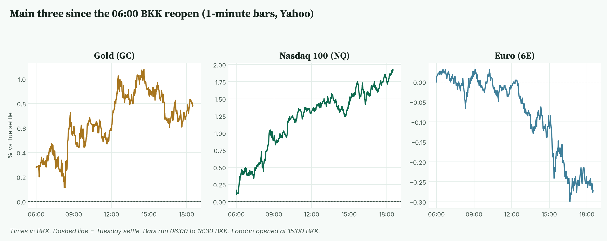
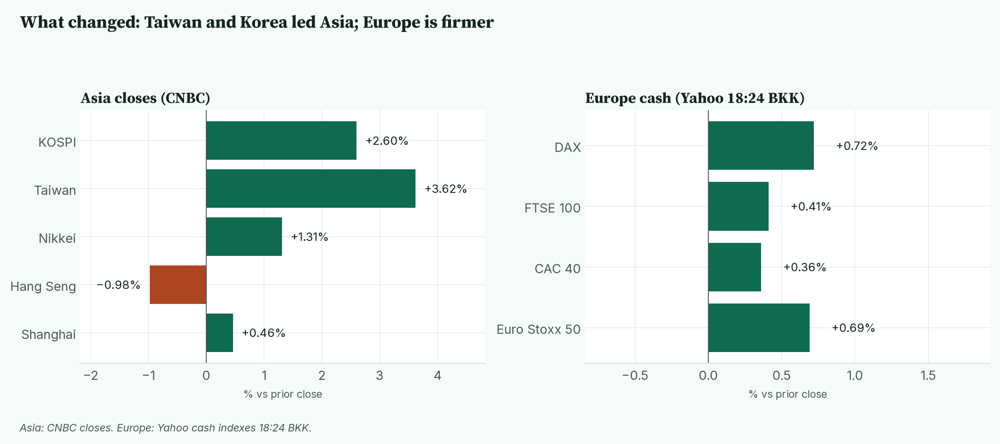
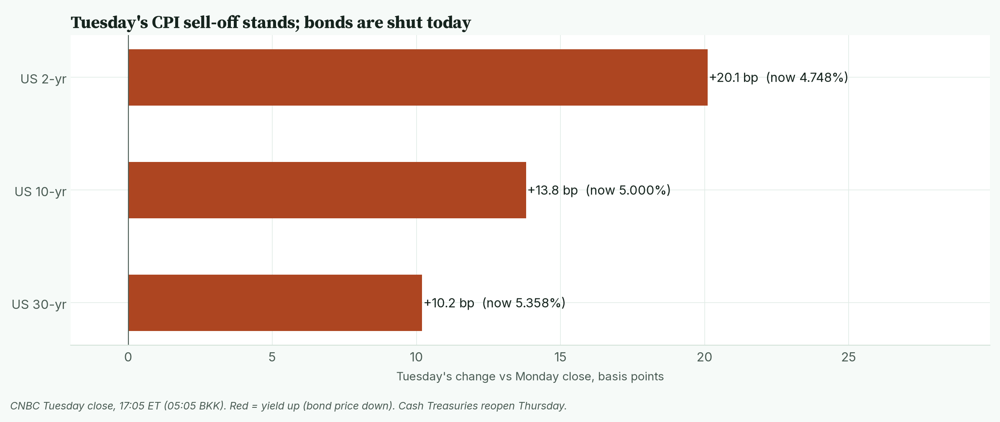
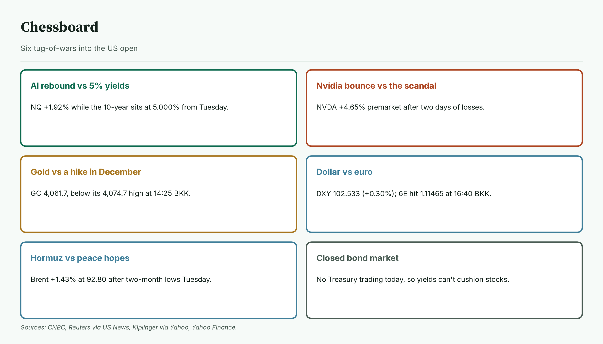
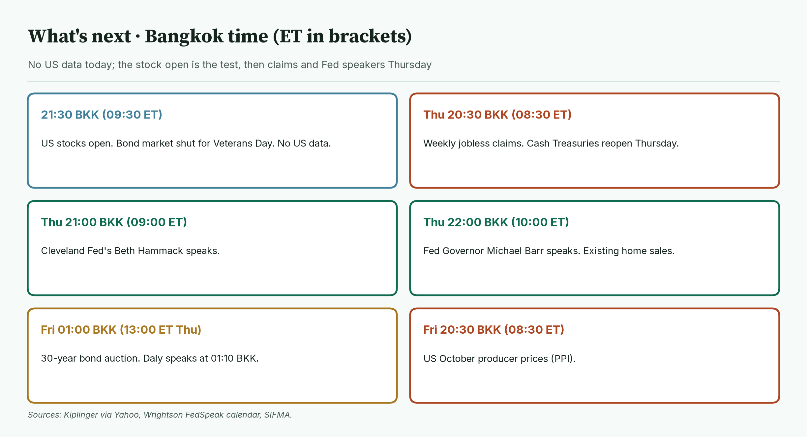
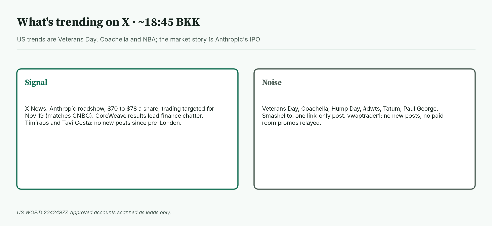

April · Market Intel, pre-NY · Wed Nov 11, 2026 · ~19:00 BKK / ~07:00 New York
Headline: The AI trade is back. Nasdaq futures are up 1.92% at 28,369.25 as CoreWeave's beat and Nvidia's 4.65% premarket bounce lift tech. Gold futures are 4,061.7 (+0.78%). Euro futures slid to 1.1151 (−0.27%) as the dollar firmed. The US stock open at 21:30 BKK, with the bond market shut, decides the session.
So what: tech is rallying into 5% yields that can't trade today. The real test of Tuesday's hot CPI comes Thursday, when bonds reopen.
 Caption: Futures at 18:29 BKK versus Tuesday's settle. Nasdaq leads, gold holds a bounce, and the euro is the weak spot.
Caption: Futures at 18:29 BKK versus Tuesday's settle. Nasdaq leads, gold holds a bounce, and the euro is the weak spot.
1) Main instruments The three main contracts since the 06:00 BKK reopen, as a % move from Tuesday's settle. Nasdaq climbed all day. The euro slid after London opened. |
 Caption: The three main contracts since the 06:00 BKK reopen, as a % move from Tuesday's settle. Nasdaq climbed all day. The euro slid after London opened.
(Quotes are CNBC futures at 18:29 BKK (06:29 New York), matching the Yahoo Finance feed within 1.5 points. Session highs and lows use Yahoo 1-minute bars from the 06:00 BKK CME reopen (18:00 New York Tuesday).)
Caption: The three main contracts since the 06:00 BKK reopen, as a % move from Tuesday's settle. Nasdaq climbed all day. The euro slid after London opened.
(Quotes are CNBC futures at 18:29 BKK (06:29 New York), matching the Yahoo Finance feed within 1.5 points. Session highs and lows use Yahoo 1-minute bars from the 06:00 BKK CME reopen (18:00 New York Tuesday).)
- Gold futures (GC, Dec): 4,061.7, +0.78%, at 18:29 BKK. Driver: a partial bounce after Tuesday's CPI drop, capped by bets on a December Fed hike (Dow Jones via Morningstar). Tuesday's settle was 4,030.2. Today's range is 4,034.1 (08:14 BKK) to 4,074.7 (14:25 BKK). It is down from 4,068.6 at pre-London. Spot gold is 4,050.91, +0.50% (CNBC, 18:40 BKK).
- Nasdaq 100 futures (NQ, Dec): 28,369.25, +1.92%, at 18:29 BKK. Driver: CoreWeave beat and raised its outlook, and Nvidia is rebounding (Reuters via US News, CNBC). Tuesday's settle was 27,835.25. Today's range is 27,856.00 (06:10 BKK) to 28,376.75 (18:29 BKK), so it is trading at the high. It is up from 28,229.75 at pre-London.
- Euro futures (6E, Dec): 1.1151, −0.27%, at 18:29 BKK. Driver: a firmer dollar. Lagarde spoke about Europe's capital markets and the digital euro (ANSA, Teleborsa). Tuesday's settle was 1.11815. Today's range is 1.11465 (16:40 BKK) to 1.11855 (10:14 BKK). It is down from 1.11770 at pre-London. Spot euro is 1.1133 (CNBC, 18:40 BKK).
- Takeaway: Nasdaq is at the day's high. Gold gave back part of its gain. The euro made a new low for the day this afternoon.
Context. The dollar index (DXY, the dollar against six major currencies) is 102.533, +0.30% (CNBC, 18:40 BKK). The 10-year US yield (what the US government pays to borrow for 10 years) is 5.000%, up 13.8 basis points, as of Tuesday's close (CNBC, 05:05 BKK). US cash bonds are shut today for Veterans Day (a basis point is 0.01 percentage point). The VIX (the "fear gauge" built from S&P 500 option prices) is 18.59, −4.47% (CNBC, 18:40 BKK). US oil (CL, December) is 86.66, +0.72% (18:29 BKK). S&P 500 futures (ES) are 7,610.50, +0.88% (18:29 BKK). Bitcoin is $73,986, +0.51% versus CNBC's previous close (CNBC/Coin Metrics, 18:40 BKK).
2) Top signals Taiwan and Korea led Asia on AI chips. Europe is firmer, led by the DAX. |
 Caption: Taiwan and Korea led Asia on AI chips. Europe is firmer, led by the DAX.
Caption: Taiwan and Korea led Asia on AI chips. Europe is firmer, led by the DAX.
- Nvidia bounces. NVDA is +4.65% premarket at 176.75 (Yahoo, 18:39 BKK). It fell 5.47% Tuesday and 4.3% Monday over the Jensen Huang scandal (CNBC).
- CoreWeave rallies. CRWV is +13.46% premarket at 55.29 (Yahoo, 18:39 BKK). It said it expects adjusted profit in the first half of 2028 (Reuters via US News).
- Anthropic IPO. The price range is $70 to $78 a share, pricing Nov 18 and trading Nov 19 on Nasdaq as ANT (Anthropic, CNBC).
- Europe: DAX +0.72%, Euro Stoxx 50 +0.69%, FTSE 100 +0.41% (Yahoo, 18:24 BKK).
- Takeaway: AI news is beating the rates story this morning.
3) Rates, FX and oil Tuesday's CPI sell-off still stands. The 2-year jumped 20 bp, and nothing can reprice until Thursday. |
 Caption: Tuesday's CPI sell-off still stands. The 2-year jumped 20 bp, and nothing can reprice until Thursday.
Caption: Tuesday's CPI sell-off still stands. The 2-year jumped 20 bp, and nothing can reprice until Thursday.
- Tuesday close (CNBC, 17:05 ET): 2-year 4.748% (+20.1 bp), 10-year 5.000% (+13.8 bp), 30-year 5.358% (+10.2 bp).
- Fed odds: about 88% for a quarter-point December hike and 12% for a half-point (CME FedWatch via Kiplinger, Tuesday). Not re-read live today.
- Mentor: when cash bonds are shut, futures and stocks move without a live yield signal. Any repricing piles up for Thursday's open.
- Yen. USD/JPY is 159.12, +0.25% (CNBC, 18:39 BKK).
- Oil. January Brent is 92.80, +1.43% (CNBC, 18:29 BKK), with a session range of 91.48 to 93.60 since 06:05 BKK. Oil bounced from two-month lows as Hormuz shipping attacks continue (Yahoo Finance).
- Takeaway: the dollar is firming while bonds sleep, which is the euro's problem today.
4) Why it matters
A hike in December is priced. The open now tests whether AI earnings can outrun it.
- Tuesday's core CPI was 0.3% against a 0.2% forecast (BLS via CNBC, Reuters).
- Nvidia reports on Nov 17 (CNBC). Anthropic trades Nov 19. AI news flow stays heavy into both.
- GoPro fell more than 10% premarket after delaying its results (Yahoo Finance).
- Takeaway: if the open fades the AI bounce, Nasdaq has no bond rally to lean on.
5) Chessboard Six tug-of-wars into the US open. Nvidia and the dollar can move Nasdaq and the euro fastest. |
 Caption: Six tug-of-wars into the US open. Nvidia and the dollar can move Nasdaq and the euro fastest.
Caption: Six tug-of-wars into the US open. Nvidia and the dollar can move Nasdaq and the euro fastest.
- AI rebound vs 5% yields. NQ is +1.92% while the 10-year sits at 5.000%.
- Nvidia bounce vs the scandal. A 4.65% premarket gain after two days of losses.
- Gold vs a December hike. GC at 4,061.7 is below its 4,074.7 high.
- Dollar vs euro. DXY +0.30%. 6E hit 1.11465 at 16:40 BKK.
- Hormuz vs peace hopes. Brent +1.43% after Tuesday's two-month lows.
- Closed bond market. No Treasury trading today.
- Takeaway: the open is the only big scheduled event, so price action decides the day.
6) Leading indicators (BKK times) No US data today. Claims, Fed speakers and the 30-year auction come Thursday, then PPI Friday. |
 Caption: No US data today. Claims, Fed speakers and the 30-year auction come Thursday, then PPI Friday.
Caption: No US data today. Claims, Fed speakers and the 30-year auction come Thursday, then PPI Friday.
- 21:30: US stocks open (9:30 AM ET). The bond market is shut for Veterans Day. No US data (Kiplinger, SIFMA).
- Thu 20:30: weekly jobless claims (8:30 AM ET). Cash Treasuries reopen.
- Thu 21:00: Cleveland Fed's Hammack. Thu 22:00: Fed Governor Barr (9:00 and 10:00 AM ET) (Wrightson).
- Fri 01:00: 30-year bond auction (1:00 PM ET Thursday). Daly speaks at 01:10.
- Fri 20:30: October producer prices (PPI) (8:30 AM ET).
- Levels to watch: GC 4,034.1 and 4,074.7. NQ 27,856.00 and 28,376.75. 6E 1.11465 and 1.11855. 10-year 5.021% (Tuesday's CNBC high). Brent 93.60.
- Takeaway: the 21:30 BKK open decides today. Thursday's 20:30 BKK claims and bond reopen decide the rest of the week.
7) Undercovered
- Anthropic's private placement. It will sell $26 billion of stock at the IPO price to AMD, Broadcom, Google, Micron, Microsoft, Nvidia and TSMC (TechCrunch).
- Retail-heavy IPO. Anthropic is targeting about 20% retail allocation, far above the usual 5% to 10% (CNBC).
- OpenAI's numbers. Revenue rose about 50% to $10 billion from the second to the third quarter, with heavy operating losses (Dow Jones via Morningstar).
8) What's trending on X (~18:45 BKK) US trends are Veterans Day, Coachella and the NBA. Anthropic's IPO is the market story on X. |
 Caption: US trends are Veterans Day, Coachella and the NBA. Anthropic's IPO is the market story on X.
Caption: US trends are Veterans Day, Coachella and the NBA. Anthropic's IPO is the market story on X.
- US: Veterans Day, Coachella, #dwts, Tatum, Paul George.
- Signal: X News on Anthropic's roadshow shows the $70 to $78 range (matches Anthropic's filing).
- Signal / lead: X News on CoreWeave cites a $132.5 billion backlog. I have not checked that figure against the company release, so treat it as a lead.
- Approved accounts: Timiraos, Tavi Costa and vwaptrader1 have no new posts since pre-London. Smashelito posted a link only. No JJ / vwaptrader1 paid-room promos relayed.
- Noise: Veterans Day, Coachella, NBA, DWTS.
Bottom line: AI buyers are back, but bonds haven't voted yet. For Jim: Nasdaq at 28,369.25 sits at its 28,376.75 high; 27,856.00 is the floor. Gold at 4,061.7 sits inside 4,034.1 to 4,074.7. The euro at 1.1151 is near its 1.11465 low; 1.11855 is the ceiling. Interpretive note: a holiday-thin open can exaggerate moves either way. That is a possible path, not a forecast. 🔮 Interpretive, not data: 11/11 is the numerologists' "gateway" date. The market's gateway is Thursday's bond reopen. Symbol, not signal.
Confidence: Futures levels: high (CNBC, matching Yahoo). Session ranges: Yahoo 1-minute bars from 06:00 BKK (Brent from 06:05 BKK, its first bar). Yields: Tuesday's CNBC close, since US bonds are shut. DXY, VIX, spot gold, spot euro, yen, Bitcoin: CNBC, time-stamped. Premarket stocks: Yahoo, 18:39 BKK. Fed odds: CME FedWatch via Kiplinger, Tuesday, not live. News: Reuters via US News, CNBC, Anthropic, TechCrunch, Dow Jones via Morningstar, Yahoo Finance, ANSA, Teleborsa. X posts: leads only.
Charts: /workspace/april-charts/2026-11-11/pre-ny-{scoreboard,main3,asia,rates,chess,leading,xsplit}.png |